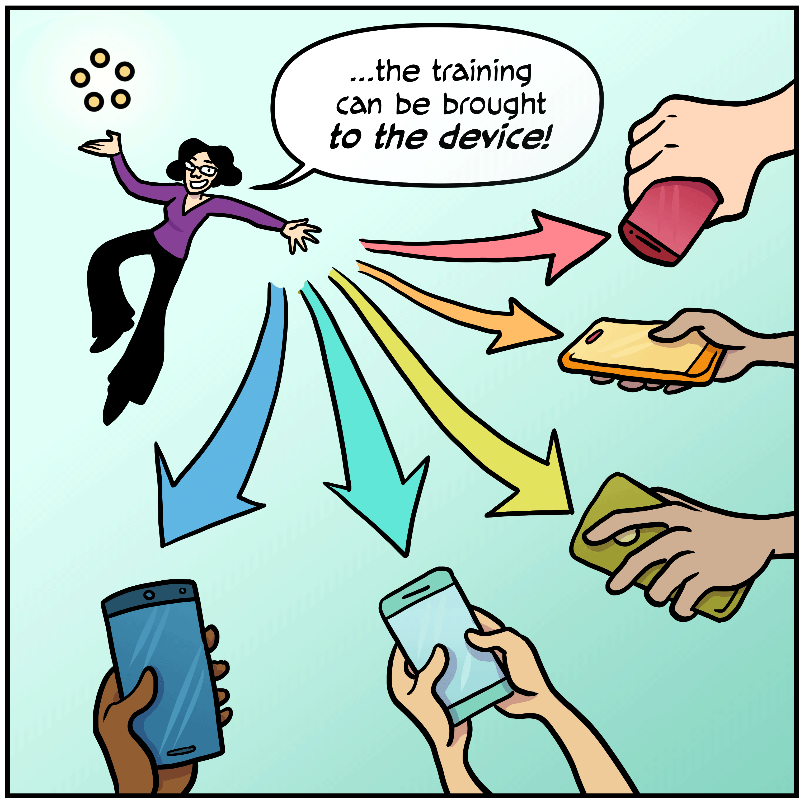

10 Differentiable Neural Computers
Advanced Machine Learning
Recap – AdaBoost
AdaBoost achieves the construction of a “strong” classifier from a combination of “weak” classifiers.
It combines weighting of data points to generate a diverse set of “weak” classifiers with their suitable combination into the desired “strong” classifier.
- Misclassified samples receive higher weight – have more attention of next learner.
- AdaBoost minimizes the upper bound of the training error instead of directly minimizing the training error. It chooses an optimal weak classifier and voting weight.

Decentralized Learning


Federated Learning
Federated learning:
- improve current model on device from local data
- summarizes the changes into a small focused update
- send this update back (encrypted) to server
- integrated into update through averaging and improve the shared model.

Receiving only Adaptation of Model

Receiving only Adaptation of Model

Brief Recap: Generative Adversarial Networks


Representation of Sequences
Sequences in RNNs
Recurrent Neural Network can deal with sequences – but struggle with longer sequences and using information much later.
Long-Short Term Memory
LSTMs showed progress in this direction: adding (or suppressing) information to the cell state is learned in additional connections (through separate gates).

Selection of partial context
Many tasks require to focus on a particular subset of information.
For example, in language comprehension or translation meaning of a word depends on some part of the context.

Attentional Interfaces in NN
A goal is to learn this as well: Attend to which part of the context?
For example, a RNN can attend over the output of another RNN. At every time step, it focuses on different positions in the other RNN.
In order to learn to attend, attention has to be differentiable.

Recurrent attention model
Given an input image and foveal location, the glimpse sensor extracts a multi-resolution ‘retinal’ representation.
It produces a representation that is passed to the LSTM core, which defines the next location to attend to (and classification decision).

Different Modes of Memory Access in NTM
- weighting chosen directly by content system
- weighting used from the content system and shifted
- weighting from the previous time step is used (no input) and further advanced
As a further last stage, the weighting is sharpened in Neural Turing Machines which leads to more focussed access to memory.